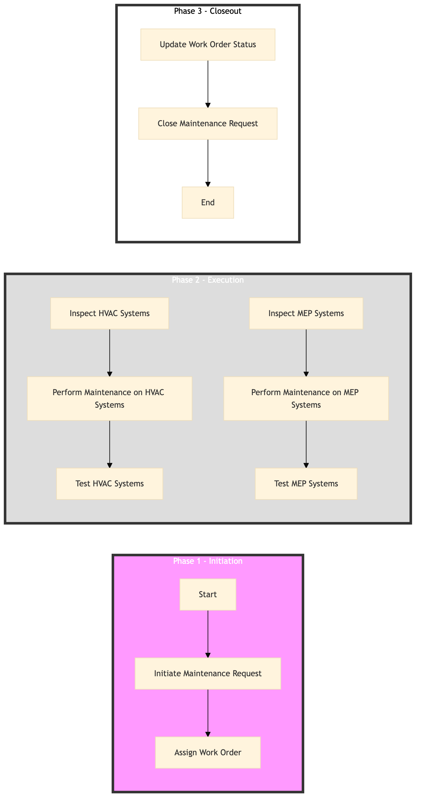

| Role | Steps |
|---|---|
| Facilities Manager | 1.1 1.2 3.1 3.3 3.4 |
| HVAC Technician | 2.1 2.3 3.1 |
| MEP Technician | 2.2 2.4 3.2 |
| Step | Name | Role | System | Input | Output | KPI | Dec? | Exc? | Pain Point / Risk |
|---|---|---|---|---|---|---|---|---|---|
| 1.1 | Initiate Maintenance Request | Facilities Manager | Oracle OPERA Cloud | Maintenance checklist | Work order created in Oracle OPERA Cloud | Less than 5 minutes per work order creation | N | Y | Delays in creating work orders can lead to missed maintenance windows. |
| 1.2 | Assign Work Order | Facilities Manager | Oracle OPERA Cloud | Work order created | Assigned technician details in Oracle OPERA Cloud | Less than 3 minutes per work order assignment | N | Y | Incorrect assignments can lead to inefficiencies and missed deadlines. |
| 2.1 | Inspect HVAC Systems | HVAC Technician | Schneider EcoStruxure | Assigned work order | Inspection report | Less than 30 minutes per system inspection | Y | N | Complex systems can lead to longer inspection times. |
| 2.2 | Inspect MEP Systems | MEP Technician | Schneider EcoStruxure | Assigned work order | Inspection report | Less than 30 minutes per system inspection | Y | N | Complex systems can lead to longer inspection times. |
| 2.3 | Perform Maintenance on HVAC Systems | HVAC Technician | Schneider EcoStruxure | Inspection report | Maintenance log | Less than 1 hour per system maintenance | Y | N | Unexpected issues can extend maintenance time. |
| 2.4 | Perform Maintenance on MEP Systems | MEP Technician | Schneider EcoStruxure | Inspection report | Maintenance log | Less than 1 hour per system maintenance | Y | N | Unexpected issues can extend maintenance time. |
| 3.1 | Test HVAC Systems | HVAC Technician | Schneider EcoStruxure | Maintenance log | Test report | Less than 15 minutes per system test | Y | N | System malfunctions can delay testing. |
| 3.2 | Test MEP Systems | MEP Technician | Schneider EcoStruxure | Maintenance log | Test report | Less than 15 minutes per system test | Y | N | System malfunctions can delay testing. |
| 3.3 | Update Work Order Status | Facilities Manager | Oracle OPERA Cloud | Test report | Updated work order status in Oracle OPERA Cloud | Less than 5 minutes per update | N | Y | Incorrect updates can lead to confusion and delays. |
| 3.4 | Close Maintenance Request | Facilities Manager | Oracle OPERA Cloud | Updated work order status | Closed work order in Oracle OPERA Cloud | Less than 2 minutes per closure | N | Y | Missed deadlines for closing work orders can impact future planning. |
This process outlines the maintenance of HVAC and MEP systems in a full-service Marriott hotel to ensure guest comfort and operational efficiency.